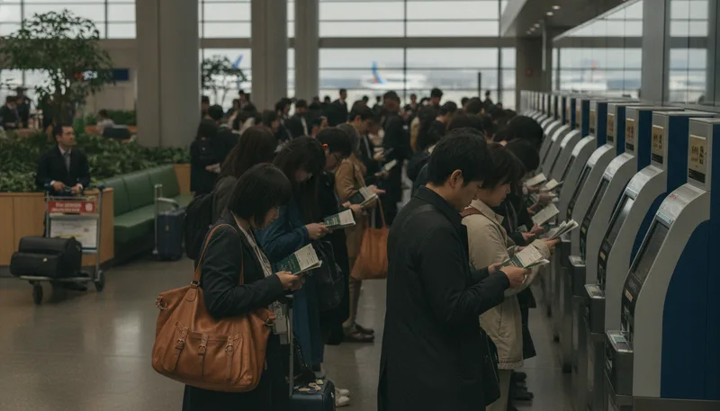

2026년 11월 1일부터 일본의 면세 제도가 현장 할인 구조에서 출국 시 공항에서 세금을 돌려받는 리펀드 방식으로 전면 개편됩니다. 매장에서 물건을 살 때 소비세가 포함된 가격으로 먼저 결제한 후 출국할 때 공항 세관이나 전용 단말기에서 확인을 받아 환급받는 구조입니다. 일본 현지에서 면세 혜택을 노리고 쇼핑을 계획 중이라면 바뀐 환급 동선과 준비물을 사전에 파악해 두어야 출국길 차질을 피할 수 있습니다.

이번 일본 면세 제도 개편은 물품을 면세로 구매한 뒤 현지에서 되팔아 불법 이득을 챙기는 행위를 막기 위해 도입되었습니다. YTN 보도에 따르면 일본 정부는 국내 재판매 차단을 위해 기존 즉시 면세 제도를 전면 수정하기로 정했습니다.
기존에는 매장 계산대에서 여권을 제시하면 소비세를 차감한 금액만 결제하면 끝났습니다. 그러나 개편 이후에는 소비세를 낸 뒤 출국장으로 이동해 반출 심사를 거쳐야 환급금이 돌아옵니다.
아래 비교표를 통해 2026년 11월 기준 달라진 주요 항목을 확인할 수 있습니다.
| 구분 | 기존 방식 (2026년 10월 31일까지) | 변경된 방식 (2026년 11월 1일부터) |
|---|---|---|
| 결제 방식 | 매장에서 소비세 차감 후 결제 | 매장에서 소비세 포함 금액 결제 |
| 환급 시점 | 결제 현장에서 즉시 적용 | 출국 시 공항 또는 항구 세관 확인 후 |
| 최소 구매 금액 | 동일 매장 하루 세외 5,000엔 이상 | 동일 매장 하루 세외 5,000엔 이상 (유지) |
| 소모품 구매 한도 | 1인당 하루 50만 엔 제한 | 한도 제한 폐지 |
| 밀봉 포장 의무 | 투명 면세 봉투 밀봉 필수 | 밀봉 포장 의무 폐지 |
| 반출 확인 기한 | 제한 없음 | 구매일로부터 90일 이내 출국 |
구매 최소 금액 기준은 동일한 매장에서 하루 동안 소비세를 뺀 가격 기준으로 5,000엔 이상이어야 하는 조건이 그대로 유지됩니다. 네비타임 여행 정보 기준 최소 금액 미만 결제 시에는 세액 환급 대상에 포함되지 않습니다.
소모품에 적용되던 1인당 하루 50만 엔 한도가 폐지되어 대량 구매 시 불편함은 줄었습니다. 또한 물품이 개봉되지 않았음을 증명하기 위해 사용하던 투명 봉투 포장 의무도 함께 없어집니다. 하지만 세관 확인 전 현지에서 사용하거나 소비하면 환급 대상에서 제외되므로 주의가 필요합니다.
출국 당일 공항에서 당황하지 않으려면 매장에서 받은 영수증과 구매 물품을 수화물로 완전히 보내기 전에 수속 단말기를 거치는 동선을 짜야 합니다.
공항이나 항구에 도착하면 위탁 수하물을 보내기 전에 면세 수속 단말기로 이동해야 합니다. 짐을 먼저 위탁 수하물로 맡겨버리면 세관 검사 시 실제 물품을 제시할 수 없게 되어 환급이 거부될 수 있습니다.
단말기에 여권을 대면 시스템에서 개별 승인 여부를 판정합니다. 그린 판정이 나오면 추가 확인 없이 국외 반출 확인이 완료되어 환급 단계로 넘어갑니다. 반면 레드 판정이 떠 오르면 세관 검사장으로 이동하여 영수증과 구매한 실물 상품을 세관원에게 직접 보여주어야 합니다.
환급금은 공항 현장에서 엔화 현금으로 직접 받거나 미리 지정해 둔 신용카드의 매출 취소 형태로 처리할 수 있습니다.
구매 절차를 모두 마쳤더라도 출국 시점 조건에 맞지 않으면 세금 환급을 받지 못하는 경우가 흔히 발생합니다.
가장 흔한 실수는 구매한 상품 중 일부를 여행 중간에 개봉하거나 섭취하는 것입니다. 마챠 여행 정보에 의하면 면세로 산 화장품이나 의약품, 식품 등 소모품을 일본 출국 전에 미리 열어서 사용하면 환급 대상에서 제외됩니다.
또한 트립닷컴 가이드에서 안내하듯 구매 영수증에 명시된 면세품 중 일부만 소지하고 출국장에 들어가는 경우도 문제가 됩니다. 세관 확인 과정에서 영수증에 적힌 물품 중 단 하나라도 빠져 있으면 해당 구매 영수증 전체에 포함된 물품이 모두 환급 대상에서 빠질 수 있습니다. 친구 선물용으로 사서 일행 가방에 나누어 담았다가 세관에서 소지품 불일치 판정을 받아 혜택을 놓치기 쉽습니다. 함께 산 물건은 출국 수속을 마칠 때까지 한 사람이 모아서 보관해야 안전합니다.
세금 환급 신청 가능 기간은 구매한 날로부터 90일 이내입니다. 일본에 장기 체류하거나 여러 번 입출국하는 경우 90일 이내 출국 조건에 맞는지 일정을 점검할 필요가 있습니다.
나리타, 하네다, 간사이, 주부, 후쿠오카, 신치토세, 나하 등 주요 7개 공항에서는 Visit Japan Web 시스템을 활용한 전자 수속 절차도 지원할 예정입니다. 라이브재팬 안내를 참고해 출국 전 미리 관련 웹 서비스에 접속해 정보를 입력해 두면 공항 현장 대기 시간을 대폭 줄일 수 있습니다.
아닙니다. 면세 혜택을 받는 물품은 일본 외부로 반출하는 것을 전제로 합니다. 출국 전에 개봉하거나 섭취하면 세관 확인 시 환급 대상에서 제외됩니다. 일본 현지에서 바로 사용할 목적이라면 면세 신청을 하지 않고 일반 결제로 구매해야 합니다.
단말기에서 레드 판정이 나올 경우 세관 검사장에서 물건 실물을 직접 보여주어야 합니다. 이미 짐을 항공사에 맡겨버린 상태라면 물품 확인이 불가능해 세금을 환급받지 못할 수 있습니다. 따라서 면세품은 수속 단말기와 세관 확인을 마치기 전까지 손에 들고 있거나 위탁 수하물 수속 직전에 처리해야 합니다.
| 슬롯 | 위치 | 기준 블록 | 근거 |
|---|---|---|---|
🖼 이미지 1 news-20261102-4okd-01-intro.webp | 문단 1 뒤 | P · 2026년 11월 1일부터 일본의 면세 제도가 현장 할인 구조에서 출국 | 도입부 첫 문단 뒤(히어로) |
| 📢 광고 1 | 문단 9 앞 | H2 · 공항 환급 수속 4단계 체크리스트 | H2 앞 · 직전 광고와 — 간격 |
🖼 이미지 2 news-20261102-4okd-02-middle.webp | 문단 15 앞 | H2 · 환급이 거부되는 주요 실패 사례 및 주의사항 | 글자수 기준 중간에 가장 가까운 소제목 앞 |
🖼 이미지 3 news-20261102-4okd-03-end.webp | 문단 24 앞 | P · 단말기에서 레드 판정이 나올 경우 세관 검사장에서 물건 실물을 직접 보여 | 마지막 문단 앞(마무리) |